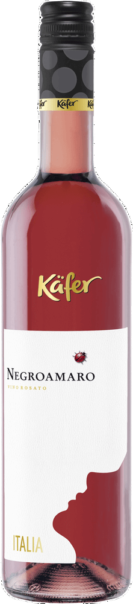

Il Negroamaro è un'uva di carattere, abituata al sole pugliese e al calore del Sud. In versione rosé perde la severità del rosso e acquista eleganza: colore buccia di cipolla, profumi di rosa selvatica e melograno, bocca fresca e sapida. Casino Nitti lavora le vigne con rispetto, raccogliendo solo quando l'equilibrio è perfetto. Un rosé che ricorda l'estate anche a ottobre, che va benissimo freddo in aperitivo o a tavola con i sapori decisi della cucina pugliese.
WOW RANGE è una selezione in evoluzione: i vini che raccolgono più voti rimangono in carta. Il tuo giudizio ha peso reale.
Scansiona il QR e lascia il tuo voto. Bastano trenta secondi per fare la differenza.